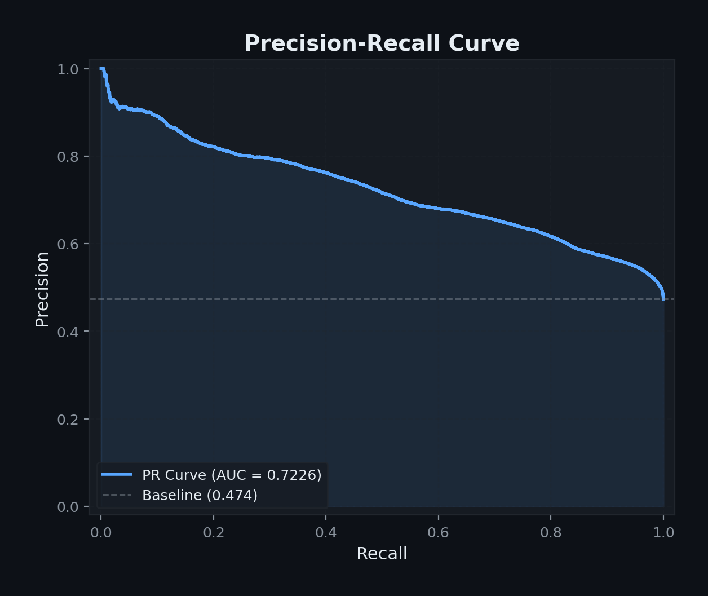

Customer Churn Prediction Using Shallow Neural Networks
CN6021 Advanced Topics in AI and Data Science
2026-05-01
Exploratory Data Analysis

Key Findings:
- Churned = 56.7% (majority)
- Retained = 43.3% (minority)
- Only 1 row with missing data
- Weak inter-feature correlations
- Support Calls & Payment Delay show clear separation between classes
Hyperparameter Tuning

Grid search:
- 27 configurations
- 5-fold stratified CV
- 25 minutes on M2
Best config = base model:
- Hidden: 32
- LR: 0.01
- Weight decay: 0.001
- CV F1: 0.9825
Architecture is robust across hyperparameter ranges.
Test Results & Generalisation Gap

| Metric | Val | Test |
|---|---|---|
| F1-Score | 0.983 | 0.665 |
| AUC-ROC | 0.997 | 0.753 |
| Accuracy | 0.970 | 0.524 |
| Precision | 0.974 | 0.499 |
| Recall | 0.989 | 0.996 |
Key finding: Val→Test gap caused by distribution shift in the dataset — not model overfitting.
Grid search across 27 configs confirmed no hyperparameters can bridge this gap.
ROC & Precision-Recall Curves


- AUC-ROC = 0.753 → model discriminates between classes above chance
- High recall (99.6%) = catches almost all churners
- Trade-off: many false positives at default threshold
Feature Importance

Top 3 predictors:
- 🔵 Support Calls (ΔF1 = 0.016)
- 🔵 Payment Delay (ΔF1 = 0.005)
- 🔵 Total Spend (ΔF1 = 0.003)
Method: Permutation importance — shuffle each feature 10× and measure F1 drop.
Features ranked on original variables, not PCA components.
SHAP Analysis

- SHAP provides per-prediction explanations (Lundberg & Lee, 2017)
- High Support Calls → consistently pushes toward churn
- Monthly contracts → higher churn propensity
- Confirms business intuition about customer dissatisfaction signals